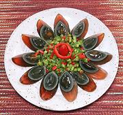

|
Preserved Duck EggsChina - Liang Ban Pi Dan | ||||
| Makes: Effort: Sched: DoAhead: |
** 20 min Part |
On the Internet, these often appear on "most disgusting foods" lists, but my guests (regular Americans all) have always loved them, and left none on the table. | |||
|
3 4 1 1 1 1 |
oz oz T t T |
Preserved Eggs (1) Chili, Green (2) Chili, Red (3) Soy Sauce , light Black Vinegar (4) Chili Oil (5) |
Make - (20 min)
|